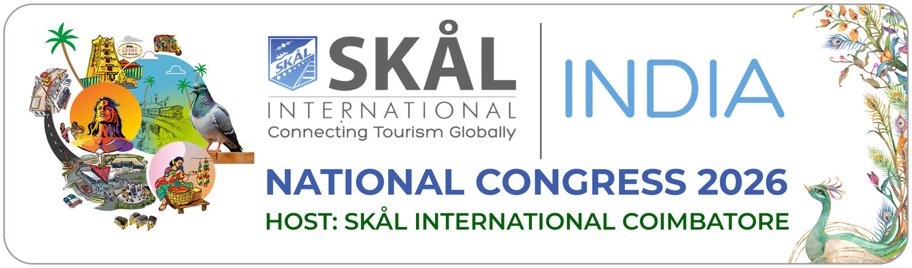
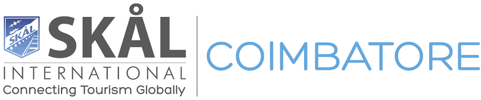

SINC2026 · Coimbatore, IndiaDoing Business Among Friends — join Skålleagues from across the country for a congress of connection, learning, and celebration in the heart of South India.

Host ClubCoimbatore — the "Manchester of South India" — is a vibrant Tamil Nadu city near the Western Ghats, a major hub for textiles, engineering, education and healthcare, known for its entrepreneurial spirit and warm hospitality. Landmarks include the 112-foot Adiyogi Shiva Statue at the Isha Yoga Center, Marudhamalai Temple, and Siruvani Waterfalls.
Le Méridien Coimbatore is a luxury hotel near Coimbatore International Airport (CJB) and the city's business districts. It hosts SINC2026 with elegantly appointed rooms, refined dining, and premium wellness amenities balancing business with relaxation.
Day by day — sessions, city experiences, and celebrations together.
Voices from across travel and tourism, sharing what's shaping the industry next.
With thanks to the organisations powering SINC2026.
| Hotel | Category | Notes |
|---|---|---|
| Le Méridien Coimbatore | ★★★★★ Official Congress Hotel | The official congress hotel and venue — world-class luxury, grand ballrooms, refined dining. |
| O by Tamara | ★★★★★ 5-Star | A contemporary urban retreat blending modern design with South Indian sensibilities. |
| The Residency Towers | ★★★★★ 5-Star | An iconic city landmark with generous rooms, rooftop dining, and top-tier service. |
| Gokulam Park | ★★★★ 4-Star | Warm hospitality, excellent cuisine, and spacious facilities — popular with business travellers. |
Published congress rates. Early-bird rates were available until 31 May 2026; hotel accommodation is booked separately.
| Package | Price (INR) | International (USD) | Includes |
|---|---|---|---|
| Single Registration — Full Congress | ₹25,000 | $300 / delegate | All sessions, 3 gala dinners, conference lunches, delegate kit |
| Twin Registration — Full Congress | ₹35,000 | $400 / couple | All sessions, 3 gala dinners (both), conference lunches (both), city tour, delegate kits |
| Congress Only (domestic, no room) | ₹15,000 | — | All sessions, conference lunches, delegate kit |
Coimbatore International Airport (CJB) offers direct flights from major Indian cities and select international routes, plus rail/road links from Chennai, Bangalore and Kochi. Airport transfers can be arranged through the congress secretariat.
Most nationalities can apply for an e-Visa online at least 4 days before arrival, or a Business Visa for delegates. Ensure passport validity of at least 6 months. The secretariat can provide support letters if needed.
Warm, humid weather with occasional light showers — expect 22°C–31°C (72°F–88°F). Light layers and comfortable walking shoes are recommended.
The local currency is the Indian Rupee (INR). Major cards are widely accepted at hotels and restaurants, and ATMs are readily available; carry some cash for local markets and transport.
Coimbatore has excellent medical facilities. Travel insurance covering medical expenses and standard vaccinations for India are advisable. Bottled water is recommended.
Strong mobile coverage across the city. International SIM cards and data plans are available at the airport, and all congress venues provide high-speed Wi-Fi.
 A Ramesh ChandrakumarPresident
A Ramesh ChandrakumarPresident Nijo AugustinSecretary / Web Admin
Nijo AugustinSecretary / Web Admin Raj Kumar Renga RajuTreasurer
Raj Kumar Renga RajuTreasurer PK GaneshCongress Chair
PK GaneshCongress Chair Muthukumar KCongress Secretary
Muthukumar KCongress Secretary Ramasamy RanganathenCongress Treasurer
Ramasamy RanganathenCongress Treasurer S AmarnathCongress Joint Secretary
S AmarnathCongress Joint Secretary Gugan IlangoCongress Sponsorship Chair
Gugan IlangoCongress Sponsorship ChairSource: sinc2026.org — official SINC2026 congress website.